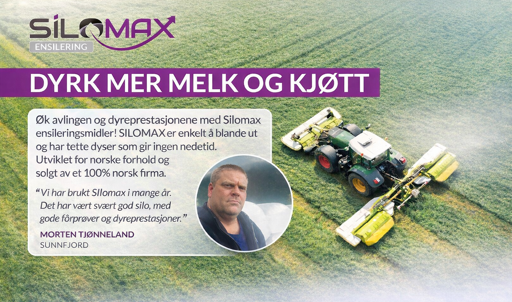
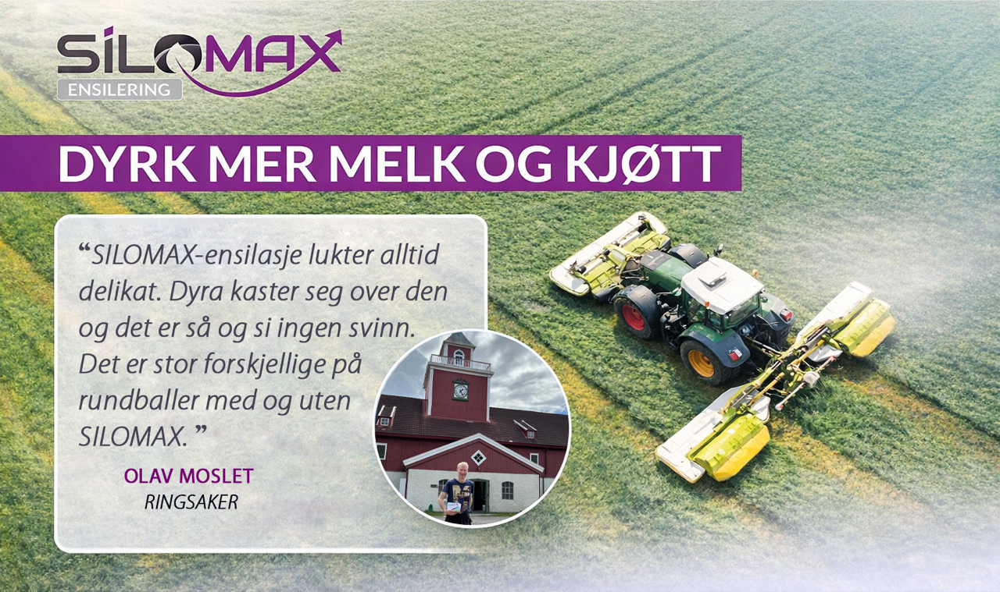
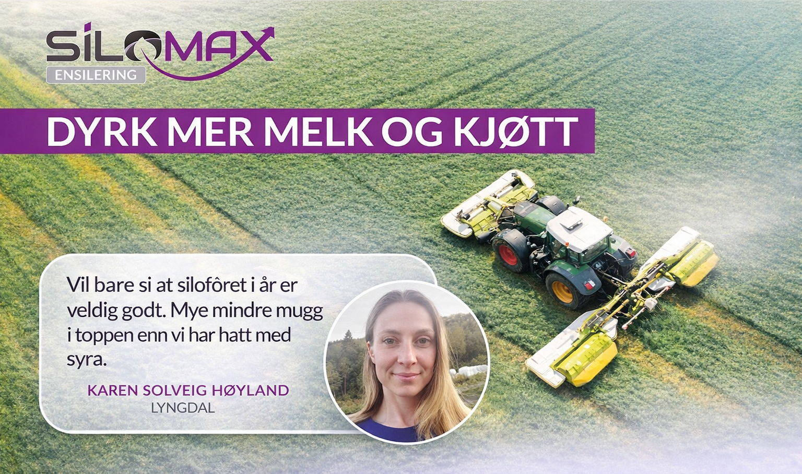

Mer melk og kjøtt fra gårdens egne ressurser
Bevist pålitelig under reelle norske forhold i en årrekke – støttet av vitenskap.
Intervju fra praksis
Se erfaringene direkte fra gårdene
Se hvordan SILOMAX fungerer i praksis.
Resultater i praksis
Erfaringer fra norske gårdbrukere
Se hva bønder over hele landet opplever med Silomax IQ og STABIL


